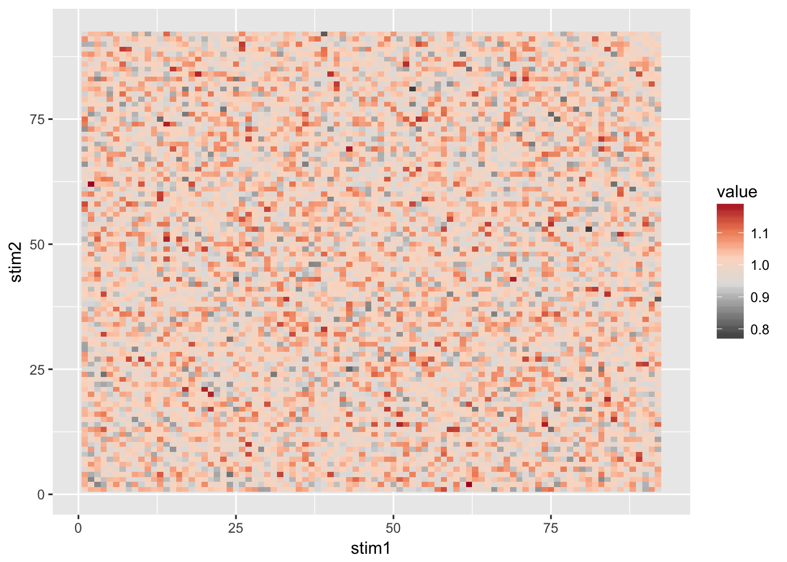

5 scrap
kriegeskorte 2008- mistakes useful properties of correlation distance with appropriateness of it use.shepard 1962a- “Clearly, the success of such an undertaking depends upon the selection of the proper distance function; that is, the function that will transforn~ the proximity measures into Euclidean distances.”- “The consequent nonlinearity of the distance function can magnify seemingly negligible statistical fluctuations of small proximity measures into wild swings of the corresponding estimates for the large distances”
“The preceding tests have indicated that, when the proximity measures are exactly specifiable as a function of the distances in a known Euclidean configuration, both the function and the configuration can be recovered by the analysis of those proximity measures alone.”
https://pigeon.psy.tufts.edu/avc/dblough/measurement.htm - integral vs. separable dimensions and euclidean vs minkowski measurements, does the brain have a ‘preferred axis orientation?’ – if minkowski, need to also determine the relative ‘weight’ of each of the dimensions.
http://ramet.elte.hu/~podani/3-Distance,%20similarity.pdf - The distance is meaningful only if the within-group covariances are homogeneous (more precisely, they estimate the same common covariance matrix), and the distribution of variables is multivariate normal. Sneath & Sokal (1973) em- phasize, however, that the distance measure is less sensitive to the violation of these condi- tions (robustness). Note, further, that computation of generalized distance is possible only if the number of objects is not less than the number of variables. Otherwise matrix W is singular (Appendix C) and cannot be inverted. The same problem arises if the correlation of any two variables is –1 or 1, or if the variance of one or more variables is zero.
Shepard 1970 doesn’t really argue for the 2nd-order isomorphism as literal neural representations.
Vector space qualities pg. 24 https://www.google.com/url?sa=t&rct=j&q=&esrc=s&source=web&cd=4&cad=rja&uact=8&ved=0ahUKEwiVq7aep8_YAhVLzWMKHeYxC2QQFghAMAM&url=http%3A%2F%2Fwww.springer.com%2Fcda%2Fcontent%2Fdocument%2Fcda_downloaddocument%2F9781447140740-c2.pdf%3FSGWID%3D0-0-45-1332402-p174313277&usg=AOvVaw3TKWDlTo_r49F-HBIhWjlN
relationship between vector spaces and correlation: http://www.pas.rochester.edu/~douglass/papers/Towsley_Pak_Douglass_published_.pdf
the permutation test is distance correlation: https://en.wikipedia.org/wiki/Distance_correlation
library(ggplot2)
n_stim <- 92
n_vox <- 316
n_scans <- 14
# random mean adjustment values for different "codes"
#rep_shunt <- array(rnorm(n_stim))
#rep_shunt <- rnorm(n_stim/23)
rep_shunt <- c(-1,0,1,2)
rep_shunt <- array(rep(rep_shunt, each=23))
# bold means for each stimulus,
# return vector of mean bold values for each voxel for a stimulus
stim_mean <- function(stim_shunt, scans=n_scans, vox=n_vox){
s_mean <- colMeans( # mean across presentations
matrix(nrow=scans, ncol=vox,
#data=c(rnorm(vox*scans),rnorm(8*vox*scans/9, mean=stim_shunt, sd=0.5)))
data=rnorm(vox*scans, mean=stim_shunt, sd=0.5))
)
return(s_mean)
}
# bold means for each stimulus
subj_rep <- apply(rep_shunt, 1, stim_mean)
# dissim/1-correlation matrix across stim
subj_cor <- cor(subj_rep, method="pearson")
diag(subj_cor) <- 0
subj_cor <- 1-subj_cor
subj_cor_melt <- reshape::melt(subj_cor, varnames=c("stim1", "stim2"))
ggplot(subj_cor_melt, aes(x=stim1, y=stim2, fill=value))+
geom_raster()+
scale_fill_distiller(type = "div", palette="RdGy")
p val estimation from westfall/young p.38-9
# NSIM
nsim <- 10000
nboot <- 1000
counts <- 0
for (i in seq(nsim)){
if(i%%50 == 0){
print(i)
}
# generate sample data vectors
v1 <- rnorm(100)
v2 <- rnorm(100)
r0 <- cor(v1, v2)
# perm test
countb <- 0
for (j in seq(nboot)){
r1 <- cor(v1, sample(v2))
if(r1>r0){
countb <- countb+1
}
}
if (countb <= 0.05){
counts <- counts+1
}
}
adj_a <- counts/nsim